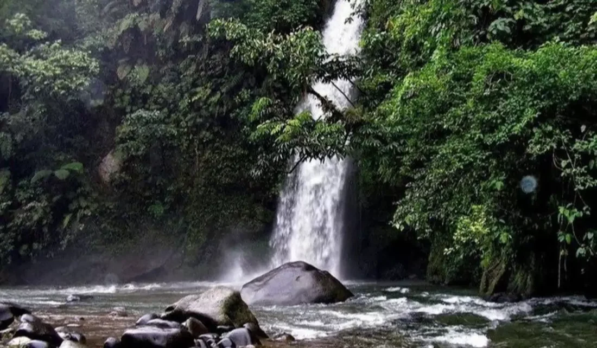

Air Terjun Lematang
Air Terjun Lematang Indah adalah salah satu destinasi wisata alam unggulan di Kota Pagar Alam, Sumatera Selatan, yang terletak di Desa Prahu Dipo, Kecamatan Dempo Selatan. Air terjun ini memiliki ketinggian sekitar 40 hingga 60 meter dengan aliran deras yang langsung jatuh ke sungai tanpa membentuk kolam besar, menciptakan pemandangan yang memukau dan suasana sejuk alami. Akses menuju lokasi cukup mudah, dengan jalur beraspal dan anak tangga yang aman untuk dilalui pengunjung. Meski tidak disarankan untuk berenang di bawah air terjun karena derasnya arus, wisatawan masih bisa bermain air di tepi bebatuan serta menikmati kegiatan lain seperti memancing, arung jeram ringan, atau sekadar bersantai. Didukung dengan fasilitas seperti area parkir, toilet, warung, dan bilik ganti, serta tiket masuk yang sangat terjangkau, Air Terjun Lematang Indah menjadi tempat ideal untuk healing dan menikmati keindahan alam tropis Sumatera.
Kembali